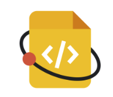

 Apache Cassandra is applying to the Google Season of Documentation (GSoD) in 2023!
GSoD provides support for open source projects to improve their documentation and gives professional technical writers an opportunity to gain experience in open source. It enables open source projects to apply for funds that enable individuals to apply and get paid to work on projects. The program helps raise awareness of open source, of docs, and of technical writing.
This page shows the GSoD proposal submitted to Google, and if we win approval, will be updated with more information on how to apply.
GSoD recognizes that the program can benefit anyone at various stages of their career. That includes people changing careers, those who are self-taught, those returning to the workforce, and more. The goal is to create a starting point for anyone who isn’t sure how to get started in open source or uncertain whether open source communities would welcome their contributions. The mentor this year will be Lorina Poland, an Apache Cassandra committer and technical writer with 10 years of experience writing about Cassandra.
You can find more details about the program on the official GSoD website.
If you are interested in applying to participate on Apache Cassandra during GSoD, please join the #cassandra-docs room on Slack and introduce yourself! Bookmark this page, so you can come back and check if our proposal was won a 2023 spot.
The best GSoD participants are self-motivated and proactive, so familiarize yourself with the current documentation. Good luck!
Proposal
PROPOSAL TITLE - Update Apache Cassandra Documentation for version 4.x/5.0
About your organization
Apache Cassandra® (current version 4.1, first release in 2008) is an Apache 2.0-licensed NoSQL database for applications requiring high-volume reads and writes with high availability. Apache Cassandra® is the only distributed NoSQL database that delivers the always-on availability, blisteringly fast read-write performance, and unlimited linear scalability needed to meet the demands of successful modern applications.Our contributors are Cassandra enthusiasts from all around the world, and our users are enthusiasts, large and small companies, and organizations. Tens of thousands of Apache Cassandra clusters are in production settings.
About your project
Your project’s problem
Like all open-source projects, Apache Cassandra attracts a small number of technical writers to maintain documentation. Today, there are a number of features and changes that require documenting, to bring the documentation available up to par with the current latest version, 4.1. With a new major version on the horizon, 5.0, it is important to remember that older versions need documenting just as much as newer versions. Plus, the new version will require a great deal of effort from the currently engaged technical writers.
Your project’s scope
The Apache Cassandra project will:
-
Audit the existing documentation and create a friction log of the current documentation for items that need updating or correcting.
-
Using the friction log as a guide for understanding the gaps in the documentation, create updated documentation.
-
Create and make sure a Slack channel is available to help contributors new to pull requests and GitHub to help them understand and use our process. This Slack channel will enable mentorship of the technical writer(s) selected for the project.
-
Incorporate feedback from documentation review (volunteers in the project) in the community.
-
Work with the release team to update the documentation.
Work that is out-of-scope for this project:
-
Reorganization of the documentation (a project that should be complete before start of work).
-
In general, writing for Cassandra 5.0, although exceptions may be considered.
Strong technical writing candidates have demonstrated interest in this project, and we estimate that this work will take three months to complete. The Apache Cassandra PMC and one committer (the core maintainer of the documentation at this time) have committed to supporting the project.
Measuring your project’s success
-
Once the audit is completed and the full scope of the tickets required to fully complete the job are understood, a target can be set for a percentage of all the tickets to consider the project successful.
-
We will track two metrics (number of total tickets and number of pull requests created for the tickets) during the project.
-
We would consider the project successful if, after publication of the new documentation:
-
The number of completed tickets is TBD % of the total tickets.
-
Timeline
The project itself will take approximately six months to complete. Once the tech writers are hired, we’ll spend a month on tech writer orientation, then move onto the audit and friction log, and spend the remaining months focusing on creating the documentation.
| Month | Activity |
|---|---|
May 2023 |
Orientation |
June 2023 |
Audit existing documentation and create friction log |
July-September 2023 |
Create documentation |
October 2023 |
Project completion |
Project budget
| Budget item | Amount | Running Total | Notes/justifications |
|---|---|---|---|
Two (2) technical writers to audit, update, test, and publish new documentation of Apache Cassandra 4.x features |
5000.00 |
10,000.00 |
Enables two writers to gain experience and get mentoring to improve their skills. This grant is an incentive to get involved. |
Project t-shirts (4 t-shirts) |
60.00 |
10,060.00 |
Contributes to the good feeling of group effort. |
TOTAL |
10,060.00 |
Additional information
Previous experience with technical writers or documentation
The primary mentor for this project has been a technical writer for 8 years, and is an Apache Cassandra committer. This mentor has worked on the project documentation substantially for several years, and is highly familiar with all aspects of the documentation and process for publishing. In addition, the mentor has trained a number of technical writers over the last 6 years, from novices to experienced writers. The expectation is that the mentoring provided would increase the participants' skill level, regardless of their level of expertise.
Previous participation in Google Season of Docs, Google Summer of Code or others
The Apache Cassandra project participated in the Google Season of Docs in 2019. The Apache Cassandra project also participated in the Google Summer of Code in 2016 and 2021. These experiences mean that there are committers who have mentored participants successfully and effectively.